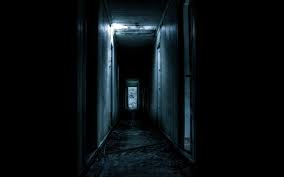

TÚ:
Ugh, ¿D-donde estoy?
eh? ¿Porque estoy atado en las manos y la cabeza?
¿Q-Que mierda es esto? ¿Una claze de broma de alguien?
...
Espera...
¿¡P-Porque no puedo recordar NADA!? Ugh me duele la cabeza, y lo unico que puedo recordar es mi nombre... ¿Quien soy? ¿Quien fui? ¿Que soy? PORQUE NO PUEDO RECORDAR NA-
Escuchas como se abre la puerta de manera violenta
???: O-o-oh v-vaya, t-te desper-despertaste que-querido amigo...
El tipo tenia una voz quebradisa y ronca, ademas se notaba un peculiar tartamudeo
TÚ: ¿Q-Quien e-eres?
???: ¿O-oh v-v-v-vamos n-n-no m-me re-re-recuerdas vi-viejo amig-amigo?
TÚ (Pensamiento): ¿¡Viejo amigo!? ¿Quien es este tipo? ¿¡Es alguna clase de psicopata!?
???: mmmm, tal parece que "el" te ato de cabeza a pies, mmm, ja, no es pro-problema la v-v-verdad...
TÚ: U-h... ¿A q-que te refier-
El misterioso hombre lanzo un cuchillo hacia ti, atinandole en la cuerda de tu brazo derecho, rapidamente agarras el cuchillo que lanzo y lo usas para cortar las otras cuerdas
???: hum, pa-pa-parece que-que el-el 7 te ben-bendijo... je, es-es al-al-alguien ama-amable, tu.tuviste s-suerte
El misterioso hombre se fue por la puerta.
TÚ (Pensamiento): ¿¡Q-QUE MIERDA ACABA DE PASAR!? ¿¡QUIEN ERA ESE TIPO!? ¿¡COMO SABA MI NOMBRE!? ¿¡QUE MIERDA SIGNIFICA QUE EL "7" ME BENDIJO!? calma... tengo que centrarme a en salir de aqui...
Con cautela sales de la habitacion
7: ¡Bu!
TÚ: AAAAAAAAAAAAA
7: PFF TE ASUSTASTE TODO JAJAJAJAJAJA
TÚ: ¿¡Quien eres!?
7: ¿Uh? ¿Que lizard no te dijo que yo te bendije? bueno no importa, hola humano, yo soy el dios de la fuerza apodado "7" te guiare por tu camino hasta salir de aqui, tu objetivo para poder salir de aqui es conseguir 50 tokens, se te pondran al final de cada nivel dos o mas opciones para elegir, dicho eso me retiro, suerte.
TÚ:¡E-ESPERA! mierda ya se fue... ¿¡Y como es eso de conseguir 50 tokens!? ¿¡En que clase de juego macabro me he metido!?
Sin nada mas que hacer, decides seguir avanzando por el pasillo...
Avanzas por el pasillo y te encuentras con una nota que dice: "Lo seguro es mucho mas seguro que lo arriesgado, puesto que lo arriesgado es muy arriesgado, pero nunca esta de mal arriesgarse un poco, ya que esto te puede traer beneficios por la misma definicion de arriesgado".
Adelante de esa nota ves 3 botones con 3 pantallas, cada pantalla esta arriba de cada boton.
Miras por la primera pantalla, vez a un caballero de armadura blanca, se le nota exhausto, cansado, esta peleando contra un mounstro, los golpes del caballero de armadura blanca son ataques potentes con mucha precision
pero a cambio de esto, el caballero de armadura blanca casi no se centra en esquivar y recibe muchos golpes del enemigo se podra decir que su estilo de combate es muy arriesgado.
Miras la segunda pantalla, esta pantalla enfoca a un caballero de armadura negrea, este se veia muy calmado, casi ni exhausto, este al igual que el caballero de armadura blanca esta peleando contra un mounstro, pero a diferencia del anteriormente mencionado
el caballero de armadura negra se centra en esquivar en vez de encestar golpes al mounstro, se podria decir que su estilo de combate es muy seguro.
Y al final miras en la tercera y ultima pantalla, esta enfoca a un caballero de armadura plateada, este esta haciendo lo mismo que los dos anteriores, peleando contra un mounstro, pero a difrencia de los otros, este no se inclina a ningun extremo
es decir, no se centra demasiado en esquivar, pero tampoco se centra unicamente es golpear, se podria decir que su estilo de combate es balanceado.
Y arriba de los botones aparece un texto que dice: "¿Cual caballero matara al mounstro mas rapido?"
Opcion 1: Caballero de armadura Blanca
Opcion 2: Caballero de armadura Negra
Opcion 2: Caballero de armadura Plateada